Instant code search and code intelligence, in one Rust binary
Search any folder with no index. Index a repository for ranked search by meaning or name, definitions, callers, references and the tests a git diff touches. From the terminal, your editor or an AI coding agent.

Two engines, one binary
Each engine works on its own. Use the first on any folder right away, and the second where you want answers about the code itself.
Instant search, no index
No index, no parsers, no background process. Literal, regex, identifier in every casing, fuzzy, multiline and inverted matching over every readable file, with .gitignore awareness, parallel traversal and streamed results. Built on the crates ripgrep is assembled from, and tested against ripgrep.
Code intelligence from an index
A persistent, incremental index: tree-sitter symbols, call edges, imports, a trigram text index, semantic vectors and a learned ranker. Ranked search by meaning, name or identifier; definitions, callers, references, outlines, duplicates, structural queries, and what a git diff touches.
What it does
One command per job. Every command, option and exit code is in the CLI reference.
- RegexLiteral, regex in linear time, and PCRE2 (
-P). - Any casingOne spelling finds snake, camel and upper case (
--ident). - FuzzyMatches within N edits, also for a regex (
--fuzzy). - ArchivesInside zip and tar files and compressed files (
-z). - Ranked searchBy meaning, name or identifier, with a learned ranker (
search). - Call graphDefinitions, callers, callees, outlines, imports (
callers). - ReferencesEach name resolved through imports and scopes (
refs). - DuplicatesExact and near copies of a function (
dupes). - Structuretree-sitter queries on the syntax tree (
tsquery). - Diff impactChanged definitions, their callers, the tests to run (
impact). - Kept freshAn incremental index that follows edits (
watch). - PrivateNo network connections. Your code stays on your machine.
Quick start
Search right away, then index when you want more.
Search any folder, no index
scrutate grep "refresh_token" . # instant, ignore-aware search
scrutate grep --ident refreshToken . # finds refresh_token, RefreshToken, REFRESH_TOKEN
scrutate grep --fuzzy=1 "shortest_pth" . # within one editIndex the repository
scrutate index
scrutate search "where do we renew expired tokens" # ranked by meaning
scrutate callers refresh_token # who calls it
scrutate impact --base main... # what my diff changes, which tests to runGive it to an AI coding agent or an editor
scrutate setup claude # or codex, opencode, cursor, gemini: adds the MCP server
scrutate serve --watch # run the MCP server yourself, index kept fresh
scrutate lsp # language server for editorsFrom Python
import scrutate
for m in scrutate.grep("TODO", ["."], mode="literal"): # streamed, GIL released
print(m.path, m.line, m.text)Install
No release archive is published yet. Build from source with Rust 1.91 or newer:
git clone https://github.com/scrutate/scrutate && cd scrutate
cargo build --release -p scrutate --locked # target/release/scrutateRuns on macOS, Linux and Windows. Install guide
Measured, not claimed
Every speed figure comes from scripts in bench/ that you can rerun, with the faster and the slower results both shown.